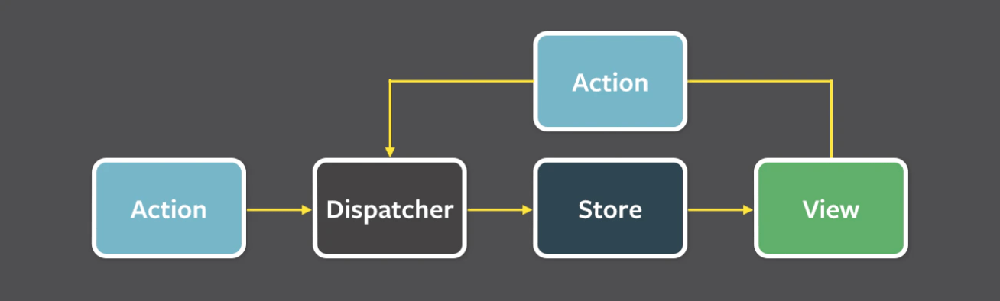

Introduction
Summary
1. coding
1.1 algorithm
1.2 AtCoder
1.3 命名規則
1.4 Design Pattern
1.5 プリンシプル オブ プログラミング
1.6 Tips(コーディングアイデア集)
2. program
2.1 C/C++
2.2 Go
2.3 JavaScript
DOM
Canvas
TypeScript
Vue
Nuxt
React
Node
JSON
2.4 PHP
Laravel
2.5 Python
2.6 Ruby
Rails
2.7 DSL
XML
TOML
正規表現
全体に適用できる考え方
3. design
3.1 html
tag
architecture
3.2 css
property
design
architecture
3.3 pwa
3.4 sass
3.5 animation
flash
gsap
WebGL
3.6 3D
3.7 Web(Webでのdesign案)
4. Web(web作成の時に使うもの)
4.1 darkmode
4.2 Loading
4.3 login
4.4 modal
4.5 pagenation
4.6 pcsp判断
4.7 progressbar
4.4 modal
4.4 modal
5. DB
5.1 SQL
MySQL
5.2 ORM
TypeORM
5.3 Redis
6. cloud
6.1 gcp
7. middleware
8. infrastructure
8.1 docker
docker compose
9. hardware
9.1 低レイヤー
9.2 OS
10. セキュリティ
11. テスト
11.1 WebUI テスト
12. パフォーマンス
11. 設計思想
11.1 フロントエンド
SPA
SSR
Flux
BFF(Backends For Frontends)
システムがWeb Pageを表示する仕組み
11.2 Server
MVC
Object指向
DDD(Domain Driven Design)
Clean Architecture
11.3 インフラ
マイクロサービスアーキテクチャ
12. My Product要件定義
13. Tool
13. 1 Git
作法
GitHub Action
PULL_REQUEST_TEMPLATE
13. 2
13. 3
14. shell
14.1 env
14.2 Makefile
14.1 zsh
15. IT単語
日本語 単語
ビジネス 用語
15. 数学
HonKitで公開
Flux
Flux パターン
参考URL
Flux アーキテクチャ図

Store アプリケーション全体のデータとビジネスロジック（必ずActionによってデータを更新する）
View Reactなどのコンポーネント
Action Viewなどから発火されてつくられるイベント
Dispatcher すべてのアクションを受けてStoreにイベントを発火する。
results matching "
"
No results matching "
"